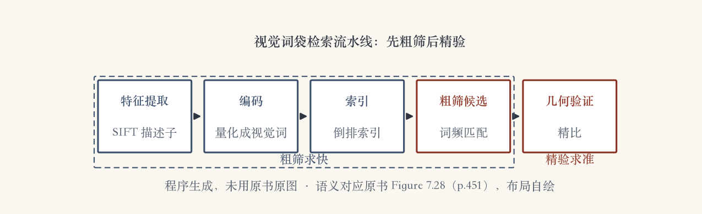

第 7 章 · 检索专题
海量图库，怎么快速找
库里是几十亿张图或视频帧。
逐张匹配的时间代价无法接受。
两段式：先粗筛，再保守验证。
本集回答：粗筛怎么又快又不漏。
依据：原书第 448 页
检索两段式
先快速粗筛
再保守验证
粗筛求快，验证求准
正课第四十八集
01 / 9
信息检索 · 倒排索引
文档界的老办法：倒排索引
快速找部分匹配是信息检索核心问题。
倒排索引：预记每个词在哪篇文档。
查询时按词直接定位文档。
词频用来快速找出匹配文档。
依据：原书第 448–449 页
文档检索与视觉检索四格对照：词 → 倒排索引 → 词频 → 匹配文档；特征 → 视觉词 → 词袋 → 匹配图像｜程序生成，未用教材或论文原图
正课第四十八集
02 / 9
开山系统 · Video Google
Video Google：检索搬进视觉
Sivic 与 Zisserman 率先移植信息检索。
每帧检测仿射不变特征。
Harris 角点区域与最大稳定极值区域。
每个归一化区域算 128 维 SIFT 描述子。
依据：原书第 449 页（含脚注 5）
白化预处理
跟踪特征估协方差
按马氏距离度量
白化后用欧氏距离
比直接 PCA 更合理
正课第四十八集
03 / 9
视觉词袋 · 聚类
特征变词：视觉词袋
视觉词：高维描述子映射成离散词。
最早用 K 均值，后来改用词汇树。
几百帧、约 30 万描述子估几千词。
最常用的词进停用表，直接丢弃。
依据：原书第 449 页
词袋与细节
图变成一袋词
文档检索那套可照搬
词汇树细节在第一版 14.3.2 节
正课第四十八集
04 / 9
性能 · 词汇树
四万张实时，一百万帧每秒一轮
Nistér 与 Stewénius 用词汇树做识别。
四万张 CD 封面数据库实时应答。
一百万帧电影画面，每秒查一轮。
量化与打分两边都高效。
依据：原书第 449–450 页
快在哪
量化与打分都高效
粗筛不再是瓶颈
2006 年的硬件
正课第四十八集
05 / 9
演进 · 位置识别与查询扩展
随机森林、位置识别与查询扩展
Philbin 等：随机森林加 K 维树更强。
任务是大规模位置识别。
验证阶段比较不同二维运动模型。
Chum 等用查询扩展再提交前排图。
依据：原书第 450 页（含脚注 6）
两个补充
随机森林加 K 维树
查询扩展：前排图再查
替代：数据库侧扩充
粗筛后仍要几何验证
正课第四十八集
06 / 9
软分配 · 几何进粗排
软分配与几何信息
一个特征硬塞一个词，边界上易分错。
软分配：描述子映射到若干邻近词。
代价是稀疏性下降、开销变大。
Jégou 等在大规模排序里加入几何。
依据：原书第 450 页
网络规模
检索
匹配
三维重建
三任务一起上
正课第四十八集
07 / 9
深度时代 · 程序生成图
从手工特征到神经特征
2012 年后出现神经特征检测器与描述子。
有时组合成端到端匹配系统。
COLMAP 至今仍用传统特征与索引。
流水线三段：特征提取、编码、索引。
依据：原书第 450–452 页

视觉词袋检索流水线：特征提取 → 编码 → 索引 → 粗筛候选 → 几何验证｜程序生成，未用教材或论文原图
正课第四十八集
08 / 9
小结 · 移交
倒排索引加视觉词袋
文档界：倒排索引、词频、停用词。
还有查询扩展这个办法。
视觉界：视觉词袋与词汇树。
下一集回第 6 章：图像分类。
依据：原书第 448–452/349 页
带走
先粗筛后精验
粗筛求快
精验求准
正课第四十八集
09 / 9